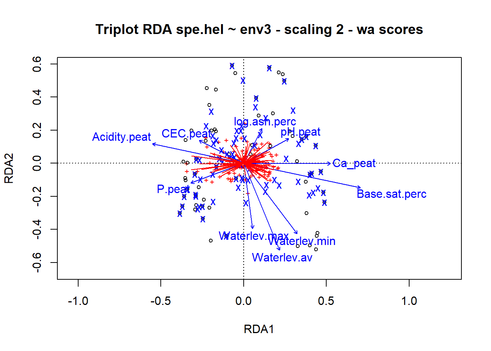

if (!require(dave)) {
install.packages("dave")
}
library(dave)
data(sveg)
data(ssit)Stat7: Lösung
- Download dieses Lösungsscript via “</>Code” (oben rechts)
- Lösungstext als Download
Musterlösung Aufgabe 7.1: RDA
Übungsaufgabe (hier so ausführlich formuliert, wie dies auch in der Klausur der Fall sein wird)
- Ladet die library dave, welche den Moordatensatz enthält. sveg beinhaltet presenceabsence-Daten aller untersuchten Arten in den Plots; ssit beinhaltet 18 metrische Umweltdaten sowie Koordinaten der Plots
- Führt eine RDA und eine Varianzpartizionierung in die Variablengruppen Physiographie (Waterlev.max, Waterlev.av, Waterlev.min, log.peat.lev, log slope.deg) und Chemie (alle übrigen) durch.
- Formuliert abschliessend einen Methoden- und Ergebnisteil (ggf. incl. adäquaten Abbildungen) zu dieser Untersuchung in der Form einer wissenschaftlichen Arbeit (ausformulierte schriftliche Zusammenfassung, mit je einem Absatz von ca. 60-100 Worten, resp. 3-8 Sätzen für den Methoden- und Ergebnisteil). D. h. alle wichtigen Informationen sollten enthalten sein, unnötige Redundanz dagegen vermieden werden.
- Während im Text normalerweise die Variablen ausgeschrieben werden solltet, genügt es hier (da ihr die entsprechenden Infos nicht bekommen habt und nur raten könntet), wenn ihr die Abkürzungen aus dem dataframe nehmt.
Moordatensatz laden
summary(sveg)
summary(ssit)
str(ssit)# x.axis and y.axis vom data frame data frame ssit entfernen
env2 <- ssit[, -c(19, 20)]Betrachtung der Daten zeigt, dass die Koordinaten in Spalten 19 und 20 sind, die daraufhin entfernt werden.
# Generiere zwei subset der erklärenden Variablen Physiografie
# (upstream-downstream-Gradient)
envtopo <- env2[, c(11:15)]
names(envtopo)
## [1] "Waterlev.max" "Waterlev.av" "Waterlev.min" "log.peat.lev"
## [5] "log.slope.deg"
# Chemie
envchem <- env2[, c(1:10, 16:18)]
names(envchem)
## [1] "pH.peat" "log.ash.perc" "Ca_peat" "Mg_peat"
## [5] "Na_peat" "K_peat" "Acidity.peat" "CEC.peat"
## [9] "Base.sat.perc" "P.peat" "pH.water" "log.cond.water"
## [13] "log.Ca.water"
# Hellinger-transform the species dataset
library(vegan)
spe.hel <- decostand(sveg, "hellinger")Vorstehend wurden die Variablen in die zwei Gruppen Chemistry und Physiography aufgteilt. Die Hellilnger-Transformation wird gemeinhin empfohlen (wobei dahingestellt sei, ob sie auch bei presence-absence-Daten nötig ist). Die weiteren Analysen führen wir mit der default-Einstellung „Scaling 2“ durch. (Je nach Bedarf bzw. persönlichen Vorlieben könnte auch Scaling 1 genommen werden).
Redundancy analysis (RDA)
RDA of the Hellinger-transformed mire species data, constrained by all the environmental variables contained in env2
## RDA der Hellinger-transformireten Moorarten-Daten, constrained mit allen
## Umweltvarialben die in env2 enthalten sind
(spe.rda <- rda(spe.hel ~ ., env2)) # Observe the shortcut formula
## Call: rda(formula = spe.hel ~ pH.peat + log.ash.perc + Ca_peat +
## Mg_peat + Na_peat + K_peat + Acidity.peat + CEC.peat + Base.sat.perc +
## P.peat + Waterlev.max + Waterlev.av + Waterlev.min + log.peat.lev +
## log.slope.deg + pH.water + log.cond.water + log.Ca.water, data = env2)
##
## Inertia Proportion Rank
## Total 0.4979 1.0000
## Constrained 0.2773 0.5569 18
## Unconstrained 0.2206 0.4431 44
## Inertia is variance
##
## Eigenvalues for constrained axes:
## RDA1 RDA2 RDA3 RDA4 RDA5 RDA6 RDA7 RDA8 RDA9 RDA10
## 0.13693 0.03784 0.01860 0.01110 0.00950 0.00882 0.00735 0.00670 0.00603 0.00582
## RDA11 RDA12 RDA13 RDA14 RDA15 RDA16 RDA17 RDA18
## 0.00498 0.00478 0.00411 0.00394 0.00310 0.00294 0.00271 0.00205
##
## Eigenvalues for unconstrained axes:
## PC1 PC2 PC3 PC4 PC5 PC6 PC7 PC8
## 0.018768 0.015312 0.013231 0.012074 0.011420 0.009385 0.008904 0.008639
## (Showing 8 of 44 unconstrained eigenvalues)summary(spe.rda) # Skalierung 2 (default)# Canonical coefficients from the rda object
coef(spe.rda)
## RDA1 RDA2 RDA3 RDA4
## pH.peat 4.531329e-02 0.0828973389 0.010965288 -0.155085533
## log.ash.perc -1.949986e-02 -0.0359844539 -0.701312936 0.034317746
## Ca_peat -1.337537e-03 -0.0288554798 0.027228621 0.068880266
## Mg_peat -3.936852e-02 0.0901067458 -0.141325150 -0.070256979
## Na_peat -9.247087e-02 0.4384377252 0.088851211 -0.248295480
## K_peat 6.296120e-02 -0.0699716499 0.015460922 0.314006668
## Acidity.peat 4.708024e-05 -0.0277547066 0.005448542 0.043747599
## CEC.peat 3.744129e-03 0.0297812515 -0.010532610 -0.040816301
## Base.sat.perc 1.129368e-03 -0.0041436746 -0.013166371 -0.005538586
## P.peat -1.097201e-02 -0.0352965867 -0.063285184 -0.019908698
## Waterlev.max -3.179331e-03 -0.0006509661 -0.015533249 0.038929542
## Waterlev.av 8.236051e-04 -0.0049269233 0.027915286 -0.018711058
## Waterlev.min 3.830259e-04 -0.0009284990 0.002283015 0.002325086
## log.peat.lev -1.168763e-01 0.1415162776 0.002413566 -0.271470076
## log.slope.deg -3.383155e-02 0.0016520826 -0.236646952 0.076539930
## pH.water 6.367244e-02 0.0538977579 0.079825940 0.179498186
## log.cond.water 6.110612e-03 -0.2600161375 -0.162560478 0.093945551
## log.Ca.water 1.317034e-02 -0.0622061756 -0.023932814 -0.597437862
## RDA5 RDA6 RDA7 RDA8
## pH.peat -0.1892255621 0.2118068056 0.071909611 -0.027538260
## log.ash.perc 0.1802037523 0.2669540104 0.724618282 -0.633888225
## Ca_peat -0.0007103952 -0.0253977768 0.029045044 -0.021223056
## Mg_peat 0.0994092273 0.1176642458 0.100095923 0.381181043
## Na_peat 2.2386515374 -0.7455515343 0.664234477 -0.718624356
## K_peat 0.1287939324 0.2046202165 -0.441055492 -0.417918725
## Acidity.peat 0.0519802264 -0.0270485440 0.071957387 -0.032035431
## CEC.peat -0.0472321525 0.0329326428 -0.053476411 0.032372963
## Base.sat.perc 0.0276382747 -0.0003004136 0.012777988 0.002256490
## P.peat -0.0401765601 -0.0112976551 0.068766100 0.003460905
## Waterlev.max -0.0456458872 0.1345249731 0.097859198 -0.022480057
## Waterlev.av 0.0355444546 -0.0722625146 -0.090790927 0.036951069
## Waterlev.min -0.0105108162 0.0136267137 0.017986436 -0.006832735
## log.peat.lev -0.5267908795 0.2162043424 -0.274818126 -0.338891940
## log.slope.deg -0.2184244227 -0.1500482029 -0.105292557 0.095365402
## pH.water -0.0425049325 -0.1782004196 -0.059654515 -0.114988275
## log.cond.water 0.0168002458 -0.1815625052 -0.007997259 -0.464849052
## log.Ca.water -0.1033058867 0.3899181259 0.078901455 0.315891985
## RDA9 RDA10 RDA11 RDA12 RDA13
## pH.peat 0.012382751 -0.017468114 0.06519173 -0.027412762 -0.104975398
## log.ash.perc 0.965668438 -0.028793591 -0.44461671 0.129536979 0.377398995
## Ca_peat 0.012619772 -0.107438326 0.04460841 -0.103406142 0.114429353
## Mg_peat 0.158294076 -0.280166029 -0.05634171 -0.070201766 0.268732885
## Na_peat -1.104751868 1.544769984 1.39741894 -0.039845605 1.780098125
## K_peat 0.534198927 -0.076296838 0.22435445 -0.163742387 -0.123997869
## Acidity.peat 0.068974997 -0.087677482 0.06530877 -0.046256867 0.033805349
## CEC.peat -0.047560024 0.083210188 -0.06665024 0.077515801 -0.068579244
## Base.sat.perc 0.020829815 0.009830788 -0.00910173 0.022643234 -0.034283054
## P.peat -0.012695344 -0.003138906 -0.03352924 -0.008483557 0.043199360
## Waterlev.max -0.012606335 -0.048317756 -0.09623737 -0.013544370 -0.032439161
## Waterlev.av -0.004208039 0.047229561 0.08062624 -0.005265601 0.023482438
## Waterlev.min 0.001054475 -0.005577274 -0.01298239 0.007069788 0.002347459
## log.peat.lev -0.003928806 -0.238217788 -0.30310954 0.563613618 0.160866568
## log.slope.deg 0.057527637 0.291653459 0.22134679 0.391384381 0.236877948
## pH.water -0.212751287 0.111459569 0.01131132 -0.090296584 0.120070232
## log.cond.water -0.668937274 -0.008842423 -0.03594579 -0.809188635 0.224126901
## log.Ca.water 1.090714519 -0.887533762 0.45040221 0.927233456 -0.402746243
## RDA14 RDA15 RDA16 RDA17
## pH.peat 0.067972158 0.018701068 0.1485174317 0.13349865
## log.ash.perc 0.194930772 0.919823359 -0.0460514789 -1.35532652
## Ca_peat -0.021190482 -0.045772935 -0.0586146947 0.14093897
## Mg_peat 0.350138790 0.113874369 0.0939318308 0.04980116
## Na_peat -0.278280645 -0.213777421 -0.8329460427 -1.09568980
## K_peat 0.105394480 -0.062226421 -0.0750622607 -0.05144200
## Acidity.peat 0.096815006 0.023817495 -0.0702792017 0.09633424
## CEC.peat -0.054680669 -0.005738998 0.0663748635 -0.11471933
## Base.sat.perc 0.039890903 0.034786341 -0.0054775951 -0.00801054
## P.peat -0.071393270 0.052202136 0.0478902318 0.02965954
## Waterlev.max -0.061094560 -0.047338261 0.0032500492 0.07021013
## Waterlev.av 0.037716665 0.061946296 -0.0002491098 -0.05976381
## Waterlev.min -0.007026893 -0.017849338 0.0015009609 0.01493811
## log.peat.lev 0.263156404 0.415682834 -0.5691321204 0.16806725
## log.slope.deg 0.219914297 -0.271490962 -0.4115760623 -0.06629741
## pH.water 0.141903633 -0.018249431 -0.0414434431 -0.04361964
## log.cond.water 0.817975382 -0.634193576 0.1319661957 -0.28691611
## log.Ca.water -1.358028534 0.192611956 -0.2582206194 -0.02520368
## RDA18
## pH.peat -0.1701622100
## log.ash.perc -0.4171590020
## Ca_peat -0.1568432425
## Mg_peat 0.2684650074
## Na_peat 0.3478060087
## K_peat -0.1752018988
## Acidity.peat -0.0918662915
## CEC.peat 0.0870338687
## Base.sat.perc 0.0140300438
## P.peat -0.0140083088
## Waterlev.max 0.0017944793
## Waterlev.av 0.0001508213
## Waterlev.min -0.0034494643
## log.peat.lev 0.1448115821
## log.slope.deg 0.0655661508
## pH.water 0.1695726179
## log.cond.water -0.3588429780
## log.Ca.water 0.2342020703
# Unadjusted R^2 retrieved from the rda object
(R2 <- RsquareAdj(spe.rda)$r.squared)
## [1] 0.5569395
# Adjusted R^2 retrieved from the rda object
(R2adj <- RsquareAdj(spe.rda)$adj.r.squared)
## [1] 0.3756874Man erhält R²adj. = 0.376 Jetzt kann man den Triplot erstellen
## Triplots of the rda results (lc scores) Site scores as linear combinations
## of the environmental variables dev.new(title = 'RDA scaling 1 and 2 + lc',
## width = 15, height = 6, noRStudioGD = TRUE) par(mfrow = c(1, 2))
# 1 und 2 Achse
plot(spe.rda, display = c("sp", "lc", "cn"), main = "Triplot RDA spe.hel ~ env2 - scaling 2 - lc scores")
spe.sc2 <- scores(spe.rda, choices = 1:2, display = "sp")
arrows(0, 0, spe.sc2[, 1] * 0.92, spe.sc2[, 2] * 0.92, length = 0, lty = 1, col = "red")
text(-0.82, 0.55, "b", cex = 1.5)
# 1 und 3 Achse
plot(spe.rda, display = c("sp", "lc", "cn"), choices = c(1, 3), main = "Triplot RDA spe.hel ~ env2 - scaling 2 - lc scores")
spe.sc2 <- scores(spe.rda, choices = c(1, 3), display = "sp")
arrows(0, 0, spe.sc2[, 1] * 0.92, spe.sc2[, 2] * 0.92, length = 0, lty = 1, col = "red")
text(-0.82, 0.55, "b", cex = 1.5)
## Triplots of the rda results (wa scores) Site scores as weighted averages
## (vegan's default) Scaling 1 : distance triplot dev.new(title = 'RDA scaling
## 2 + wa',width = 7, height = 6, noRStudioGD = TRUE)
# Scaling 2 (default) : correlation triplot
plot(spe.rda, main = "Triplot RDA spe.hel ~ env3 - scaling 2 - wa scores")
arrows(0, 0, spe.sc2[, 1] * 0.92, spe.sc2[, 2] * 0.92, length = 0, lty = 1, col = "red")
Auswahl der höchstkorrelierten Arten (Grenzwert kann subjektiv nach Bedarf gesetzt werden, hier 0.5).
# Select species with goodness-of-fit at least 0.6 in the ordination plane
# formed by axes 1 and 2
spe.good <- goodness(spe.rda)
sel.sp <- which(spe.good[, 2] >= 0.6)
sel.sp
# Global test of the RDA result
anova(spe.rda, permutations = how(nperm = 999))
# Tests of all canonical axes
anova(spe.rda, permutations = how(nperm = 999))
anova(spe.rda, by = "axis", permutations = how(nperm = 999))Die ersten drei RDA-Achsen sind also signifikant. Man könnte also auch noch eine Visualisierung von RDA 3 vs. RDA 1 machen.
- Partielle RDA
- Simple syntax; X and W may be in separate tables of quantitative
- variables
spechem.physio <- rda(spe.hel, envchem, envtopo)
summary(spechem.physio)
# Formula interface; X and W variables must be in the same data frame
(spechem.physio2 <- rda(spe.hel ~ pH.peat + log.ash.perc + Ca_peat + Mg_peat + Na_peat +
K_peat + Acidity.peat + CEC.peat + Base.sat.perc + P.peat + pH.water + log.cond.water +
log.Ca.water + Condition(Waterlev.max + Waterlev.av + Waterlev.min + log.peat.lev +
log.slope.deg), data = env2))
# Test of the partial RDA, using the results with the formula interface to
# allow the tests of the axes to be run
anova(spechem.physio2, permutations = how(nperm = 999))
anova(spechem.physio2, permutations = how(nperm = 999), by = "axis")
# Partial RDA triplots (with fitted site scores) with function triplot.rda
# dev.new(title = 'Partial RDA', width = 7, height = 6, noRStudioGD = TRUE)
triplot.rda(spechem.physio, site.sc = "lc", scaling = 2, cex.char2 = 0.8, pos.env = 3,
mult.spe = 1.1, mar.percent = 0.04)
text(-3.34, 3.64, "b", cex = 2)Varianzpartitionierung
## 1. Variation partitioning with all explanatory variables
(spe.part.all <- varpart(spe.hel, envchem, envtopo))
##
## Partition of variance in RDA
##
## Call: varpart(Y = spe.hel, X = envchem, envtopo)
##
## Explanatory tables:
## X1: envchem
## X2: envtopo
##
## No. of explanatory tables: 2
## Total variation (SS): 30.873
## Variance: 0.49795
## No. of observations: 63
##
## Partition table:
## Df R.squared Adj.R.squared Testable
## [a+c] = X1 13 0.47805 0.33958 TRUE
## [b+c] = X2 5 0.24779 0.18181 TRUE
## [a+b+c] = X1+X2 18 0.55694 0.37569 TRUE
## Individual fractions
## [a] = X1|X2 13 0.19388 TRUE
## [b] = X2|X1 5 0.03611 TRUE
## [c] 0 0.14570 FALSE
## [d] = Residuals 0.62431 FALSE
## ---
## Use function 'rda' to test significance of fractions of interest
# Plot of the partitioning results dev.new(title = 'Variation partitioning',
# width = 7, height = 7, noRStudioGD = TRUE)
plot(spe.part.all, digits = 2, bg = c("red", "blue"), Xnames = c("Chemistry", "Physiography"),
id.size = 0.7)Die durch die erhobenen Umweltvariablen insgesamt erklärte Varianz (37.6%, s.o.) entfällt zu 19.4% auf chemische Variablen, 3.6% auf physiographische Variablen und zu 14.6% auf gemeinsame Erklärung.